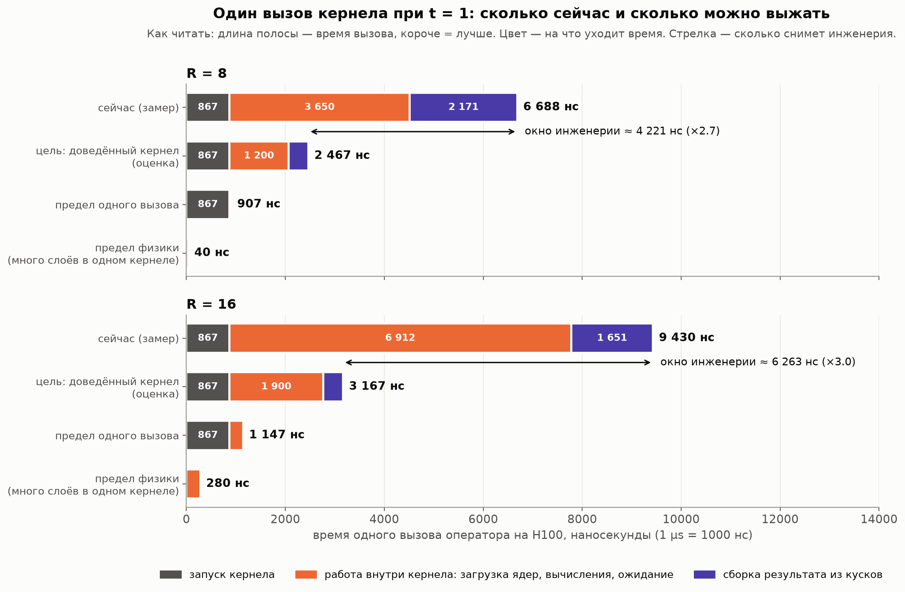
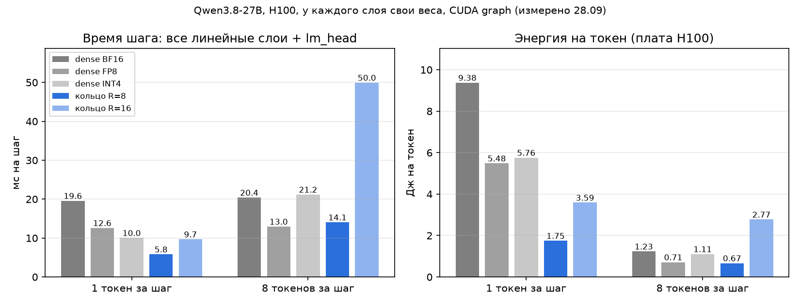
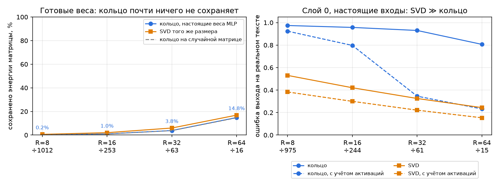
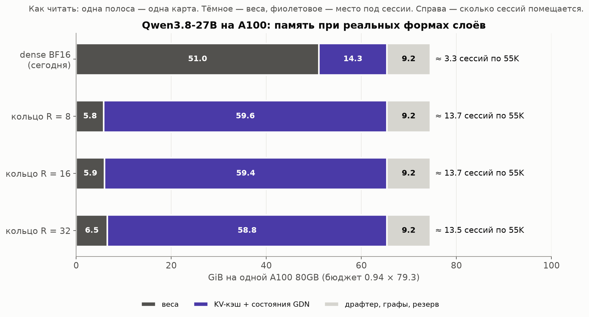
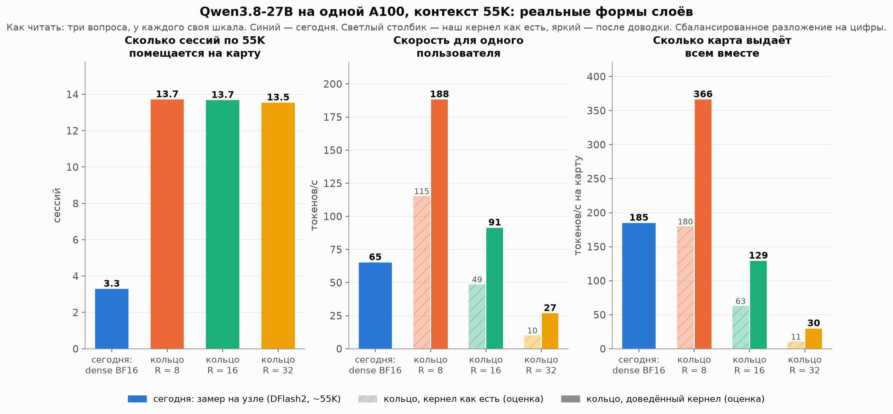

Черновик к обсуждению 29.09.2026 · Данила Пермогорский · обновлено 28.09 вечером: замеры на реальных формах и настоящих весах Qwen3.8-27B (слайды 7а–7г)
Храним не матрицу весов, а три маленьких ядра. Слой считаем прямо из них и матрицу обратно не собираем.
Когда модель генерирует по одному токену (decode), GPU почти не считает, а ждёт, пока из памяти приедут веса. Поэтому лишняя арифметика почти бесплатна, а память, которую раньше занимали веса, освобождается под KV-кэш — то есть под пользователей.
Кернел для всего кольцевого оператора из задания (вход 1920, выход 2880), H100 SXM5, FP16.
| 1 токен | наш кернел | dense (cuBLAS) | референс (PyTorch) |
|---|---|---|---|
| R = 8 | 8.2 µs | 9.8 µs | 155 µs |
| R = 16 | 10.7 µs | 9.9 µs | 160 µs |
t* = КПД кернела × точка баланса GPU ÷ лишняя арифметика
Для H100 и идеального кернела t* ≈ 82 токена при R = 8 и ≈ 12 при R = 16.
Julia-лаба Julia + CUDA.jl PyTorch + CUDA C++ H100 (аренда)
ноутбук, CPU → ноутбук, RTX 3050 Ti → ноутбук, RTX 3050 Ti → только замеры
метод на малых замерить машину, кернел и все заранее готовые
задачах проверить модель проверки корректности скрипты
155 µs референс: 3 einsum + 8 GPU-операций, упирается в CPU
↓ поворот 1: кольцо режется на независимые куски,
↓ каждый помещается на чип целиком
~14 µs один кернел
↓ поворот 2: результат шага 2 сразу идёт в шаг 3 через регистры
↓ (приём FlashAttention-2): кернел 8.4 → 4.5 µs
10.1 µs первая победа над dense
↓ поворот 3: сборка результата читала 12 значений по одному —
↓ теперь читает все сразу
8.2 µs
Все три поворота убирали ожидание, а не арифметику.
Проверено и не сработало: все слои в одном кернеле, счётчики зависимостей вместо барьера, несколько цепочек умножений на варп, split-K.

| R = 8 | R = 16 | |
|---|---|---|
| сейчас (замер) | 6 688 нс | 9 430 нс |
| цель: доведённый кернел (оценка) | ~2 470 нс | ~3 170 нс |
| окно | ~4 200 нс (×2.7) | ~6 300 нс (×3.0) |
| предел одного вызова | 907 нс | 1 147 нс |
| предел физики | 40 нс | 280 нс |
Ниже ~0.9 µs один вызов не опустится — это цена запуска кернела. Дальше только объединять много слоёв в один кернел.
Один вызов состоит из трёх частей. Каждая упирается во что-то своё.
| часть вызова | R = 8 сейчас → цель | что происходит | во что упирается | чем снимать |
|---|---|---|---|---|
| запуск кернела | 867 → 867 нс | GPU принимает команду и раздаёт блоки по SM | цена любого запуска: пустой кернел на H100 тоже 0.87 µs | внутри одного вызова никак. Только объединять вызовы: CUDA graphs, много слоёв в одном кернеле |
| работа внутри кернела | 3 650 → ~1 200 нс | загрузить ядра из кэша L2, шаг 1, барьер блока, цепочка умножений шагов 2–3 | ожидание, а не счёт: арифметики здесь 40 нс. Загрузка 16–24 KB из L2 — ~0.5 µs, каждое зависимое умножение mma — ~24 такта | загружать ядра одновременно со счётом; держать несколько независимых цепочек умножений; меньше барьеров |
| сборка результата | 2 171 → ~400 нс | каждый выход — сумма 160 кусков из разных блоков: атомики в общий буфер, счётчик, последний блок переводит FP32 → FP16 | несколько подряд идущих обращений к L2, каждое ~0.5 µs | складывать куски внутри кластера блоков через общую память кластера (Hopper), а не через глобальную |
Для R = 16 картина та же: 867 + 6 912 + 1 651 нс сейчас против 867 + ~1 900 + ~400 нс в цели. Работа внутри кернела больше, потому что цепочки умножений длиннее.
Как это подтверждено:
Итог по окну:
Вывод: на тестовом слое 1920 × 2880 по скорости мы наравне с dense, главный выигрыш — в памяти. На реальных формах матрицы в десятки раз больше, и картина другая (слайд 7а).
Кернел V3T обобщён на любые формы: моды стали параметром шаблона, добавлен BF16 (V3G). Собрано 107 вариантов под 6 форм слоёв модели, все сверены с FP64-оракулом. Тайлинг под каждую форму выбирается по таблице замеров.
Один слой MLP 5120 → 17408, µs на вызов:
| токенов за вызов | dense BF16 | dense FP8 | dense INT4 | кольцо R = 8 | кольцо R = 16 |
|---|---|---|---|---|---|
| 1 | 62 | 37 | 27 | 11.9 | 22.1 |
| 8 | 64 | 38 | 62 | 36.2 | 136 |
| 32 | 64 | 39 | 201 | 112 | 502 |

Все линейные слои модели и lm_head, у каждого из ~400 слоёв свои веса (кэш L2 не подыгрывает), CUDA graph, H100:
| dense BF16 | FP8 | INT4 | кольцо R = 8 | кольцо R = 16 | |
|---|---|---|---|---|---|
| веса, ГБ | 47.7 | 25.1 | 14.5 | 2.6 | 2.8 |
| 1 токен: мс на шаг | 19.6 | 12.6 | 10.0 | 5.8 | 9.7 |
| 1 токен: Дж на токен | 9.4 | 5.5 | 5.8 | 1.75 | 3.6 |
| 8 токенов: мс на шаг | 20.4 | 13.0 | 21.2 | 14.1 | 50.0 |
| 8 токенов: Дж на токен | 1.23 | 0.71 | 1.11 | 0.67 | 2.77 |

Скачаны линейные слои 12 блоков Qwen3.8-27B (8.4 ГБ). Каждая матрица приближена кольцом алгоритмами TR-SVD и TR-ALS (Zhao et al., 2016) — всего 368 подгонок. Автопроверки метода:
Вопрос 1 — держит ли R = 8 / 16 матрицу реального размера? Нет.
Вопрос 2 — важно ли разложение на множители? Для готовых весов почти нет.
На настоящих входах (слой 0, реальный текст) картина точнее.
Вывод: сжимать готовые веса в кольцо после обучения бессмысленно. Кольцевую модель нужно обучать — сразу в этом формате или дистилляцией с учётом активаций. Вопрос к исследователям — какое разложение (и, возможно, какой поворот базиса) даёт кольцу структуру, совпадающую с данными.
Nsight Compute на кернеле V3G (слой 5120 → 17408):
Кернел по-прежнему ждёт, а не считает. Вечером 28.09 проверили две гипотезы:
| слой 5120 → 17408 | весь вызов | без атомиков | только вычисления |
|---|---|---|---|
| R = 8, 1 токен | 11.8 | 10.1 | 7.7 |
| R = 8, 8 токенов | 34.9 | 27.7 | 20.9 |
| R = 16, 8 токенов | 139.5 | 130.2 | 123.3 |
Чтобы оценить эффект не на одном операторе, а на реальном сервисе, возьмём как ориентир инференс, который у нас уже работает и для которого есть снятые метрики. Это пример, а не цель: roadmap ниже не привязан к конкретной модели.
Всё, что ниже про кольцо, — аналитика, сделанная вместе с Claude, то есть оценка. Модель стоимости откалибрована по этим замерам и совпадает с ними в пределах 5–7%. Прямые замеры на H100 — на слайдах 7а–7в. Оценки ниже сделаны для A100 и предполагают, что качество при данном ранге держится; слайд 7в показывает, что для этого кольцевую модель нужно обучать.
Тестовая матрица в задании маленькая (1920 × 2880). У настоящих моделей матрицы в десятки раз больше. Вот все линейные слои модели из примера:
| слои | форма | сколько | доля весов |
|---|---|---|---|
| MLP gate / up / down | 5120 ↔ 17408 | 64 × 3 | ~70% |
GDN in_proj_qkvz |
5120 → 16384 | 48 | ~17% |
GDN out_proj |
6144 → 5120 | 48 | ~6% |
| внимание q+гейт, k, v, o | 5120 → 12288 / 1024 / 1024, 6144 → 5120 | 16 | ~7% |
Лишняя арифметика зависит от того, как разложить стороны матрицы на множители. Главное слагаемое — R³ ÷ (первый множитель входа × последний множитель выхода). Большие матрицы дают крупные множители, поэтому арифметики меньше.
| R | лишняя арифметика (сбалансированное разложение) | то же, «выгодное» разложение | сжатие памяти |
|---|---|---|---|
| 8 | ×1.1 | ×0.1 | ÷895 |
| 16 | ×7.7 | ×0.5 | ÷224 |
| 32 | ×57 | ×3.1 | ÷56 |
«Выгодное» разложение перекошено (например, 5120 = 128 × 10 × 4). Что оно делает с качеством, неизвестно — это вопрос к исследователям.

В примере при любом ранге до 32 от весов остаётся ~6 GiB, и почти вся карта уходит под сессии: ~13–14 сессий по 55K вместо 3–4. Этот вывод не зависит от ранга.

| сессий | 1 пользователь, tok/s | сумма на карту, tok/s | |
|---|---|---|---|
| сегодня (замер) | 3–4 | 65 | 185 |
| R = 8 (кернел как есть → доведённый) | 13.7 | 115 → 188 | 180 → 366 |
| R = 16 | 13.7 | 49 → 91 | 63 → 129 |
| R = 32 | 13.5 | 10 → 27 | 11 → 30 |
| R = 32, «выгодное» разложение | 13.5 | 71 → 122 | 114 → 186 |
Prefill — это тысячи токенов за раз. Здесь GPU считает на полную, и лишняя арифметика кольца оплачивается целиком. Поэтому для prefill нужен другой кернел: один раз собрать веса слоя из ядер и дальше считать обычным GEMM — так же, как INT4-модели распаковывают веса на лету.
| пример: prefill 45K (сегодня 14.3 с) | нашим кернелом | через восстановление весов |
|---|---|---|
| R = 8 | ~15.4 с | ~14.5 с |
| R = 16 | ~91 с | ~15.0 с |
| R = 32 | ~660 с | ~17.2 с |
ядра слоя A, B, C (одни и те же)
│
сколько токенов за вызов?
┌────────┴─────────┐
мало (decode) много (prefill)
│ │
наш кернел: свёртка восстановить W → обычный GEMM
W не собирается (+2–25% к prefill)
└────────┬─────────┘
выход слоя
Переключатель по числу токенов в коде уже есть: сейчас он выбирает между кернелами для одного и для нескольких токенов. Восстановление станет третьей веткой.
| этап | что делаем | условие перехода | если нет | срок |
|---|---|---|---|---|
| 0 ✓ | кернел оператора | — | — | сделано |
| 1 | выбрать целевую модель и обучить её слои в кольцевом формате: дистилляция или дообучение с учётом активаций, потом проверка качества на целевых задачах. Сжать готовые веса без обучения нельзя (слайд 7в) | качество в допуске | больший ранг; сжимать только часть слоёв (например, MLP); FP8 / INT4 как база | 1–3 мес., исследователи |
| 2 (частично ✓ 28.09) | decode-кернел под формы слоёв целевой модели, автотюнинг раскладки. Готово: V3G под все формы Qwen3.8-27B, таблица тайлингов для H100 | decode не медленнее FP8-инференса той же модели | оставить часть весов dense вместе со спекулятивным декодингом; TT вместо кольца | 4–8 нед. |
| 3 | prefill через восстановление весов | время до первого токена ≤ +10% к dense | prefill на отдельной dense-карте, KV-кэш переносится на кольцевую за доли секунды | 1–2 нед. (буфер + cuBLAS), 4–8 нед. (как Marlin) |
| 4 | интеграция в движок инференса (например, SGLang): свой op, CUDA graphs, больше сессий на карту | A/B против dense: цена 1M токенов, время до первого токена, tok/s | поднимать число сессий ступенями | 2–4 нед. |
| 5 | megakernel, Hopper-приёмы, AMD | — | — | потом: в примере запуски кернелов — ~0.3 мс из ~9 мс шага |
Цифры из примера (слайды 8–12) — ориентир того, что даёт каждый этап. Для целевой модели их нужно пересчитать под её формы слоёв и её нагрузку.
Регулятор: не обязательно сжимать всё. Можно сжать часть слоёв, а остальные оставить dense вместе со спекулятивным декодингом — это компромисс между памятью, скоростью и качеством.
Кернел на реальных формах есть. При одном пользователе шаг декодирования в 3.4 раза быстрее BF16 и в 2.2 раза быстрее FP8, энергии на токен в 3 раза меньше, весов в ~18 раз меньше — это меняет экономику инстанса. Но готовую модель в кольцо не сжать: кольцевую модель нужно обучать.
Первый шаг — вопрос к исследователям: как обучить (или дистиллировать) модель в кольцевом формате, чтобы качество держалось при R = 8–16, и какое разложение совпадает с подпространством данных.
factorized-abstract-lab/ (гайды 00–08), GPU-часть — CUDA.jl на RTX 3050 Ti Laptop.results/h100/*.json, финальная сессия 27.09.2026.qwen3.6-27b-2-A100 (модель Qwen3.8-27B).config.json модели (kernel-design/physics/qwen3.8-27b_config.json).tools/physics_charts.py, tools/simple_charts.py, tools/qwen_estimate.py, tools/qwen_charts.py, tools/talk_charts_0928.py.results/h100/qwen/:v3g_sweep.json, v3g_sweep2.json (NT / KS), check_bf16_v3g*.txt; куда уходит время — v3g_ablate.json;lowbit.json;model_chain_lowbit.json;quality.json, разбор в quality_review.md;activation.json;summary.md, EXTRA.md; профили — profiles/h100/v3g_*.ncu-rep.src/factorized_inference/csrc/v3g/; скрипты tools/qwen_*.py, tools/v3g_sweep.py, tools/tr_quality*.py, tools/tr_activation.py, tools/lowbit*.py. Веса Qwen в репозиторий не кладутся — их заново скачивает tools/qwen_fetch_layers.py.